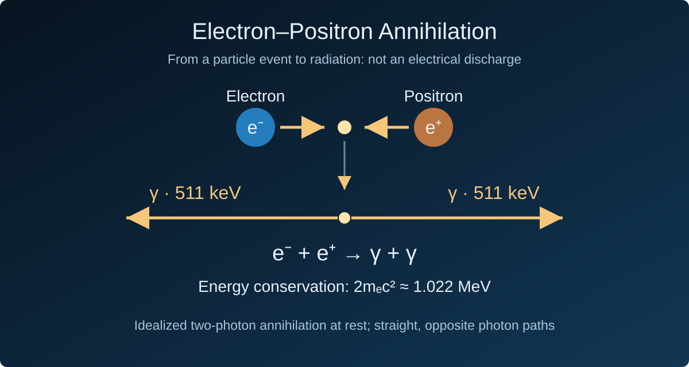
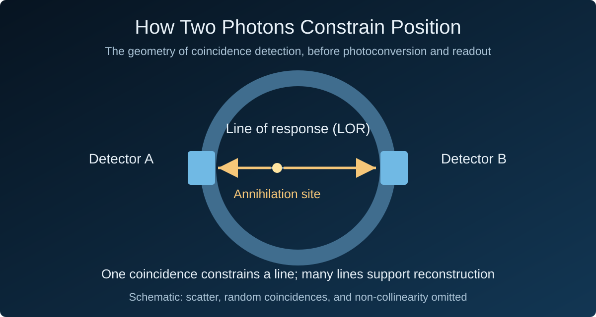

It All Begins with Annihilation Light
The Prophecy and Discovery of Antimatter
The ghost of an equation: Dirac and antimatter
In 1928, Dirac set out to unify quantum mechanics with special relativity and wrote down the equation that now bears his name. The equation unexpectedly admitted two families of solutions: one corresponding to the real electron, the other to a 'ghost' state of negative energy. In classical physics, negative-energy states imply instability; electrons should keep falling to lower energies and the entire atomic world should collapse.
Dirac's resolution was bold and strange: a vacuum is not empty but a 'sea' filled with negative-energy electrons. A hole in that sea would behave like a particle with the electron's mass and the opposite charge. No experiment had ever seen such a particle; it was a conclusion forced out by the equation itself. In 1931, Dirac called it the 'anti-electron.' A purely theoretical prophecy, placed before experimental physics.
A track in the cloud chamber: Anderson discovers the positron
In 1932, while studying cosmic rays, Anderson photographed a positively charged particle's track in a cloud chamber. Magnetic curvature, energy loss across a lead plate, and track properties helped exclude ordinary-electron and proton interpretations. He identified a particle with positive charge and a mass close to the electron's, naming it the positron.
Remarkably, Anderson did not know Dirac's prophecy at the time. The ghost particle reasoned out by a theorist and the track stumbled upon by an experimentalist met on the same particle. In 1936, at the age of thirty-one, Anderson received the Nobel Prize in Physics for the discovery.
Pair Production and Annihilation Radiation: Evidence Converges
Blackett and Occhialini's cloud-chamber work in 1933 provided important evidence for electron–positron pair production. Studies of positron-annihilation radiation connected the antiparticle's existence, production, and disappearance. Particle tracks and radiation measurements tested a common physical picture from different directions.
The discovery established a scientific sequence: theory proposed an object, experiment identified it, and subsequent work followed its interactions. Radiation released when a positron annihilates with an electron later connected this sequence to PET imaging.
From a Visible Track to an Identified Particle
A cloud-chamber photograph does not label a particle as a positron. Ionization along a charged particle's path produces the droplets that reveal its track. Magnetic curvature supplies evidence about charge. Anderson inserted a lead plate: energy loss on crossing it increased the curvature, revealing the direction of travel. Together with the track properties, this helped exclude a proton interpretation. Identification depended on several observations constraining one another.
Theory proposed a possible particle; experiment tested its charge, mass, and motion. The positron made antimatter an experimentally accessible subject and established the particle identities behind annihilation radiation. Dirac's sea belongs to the historical explanation; modern quantum field theory describes these processes through particle and antiparticle fields.
Annihilation: From Particles to Radiation
Where 511 keV Comes From
An electron and a positron have equal rest masses and opposite charges. In the low-energy two-photon annihilation commonly used in PET, their combined rest-mass energy is about 1.022 MeV. In the idealized center-of-mass frame at rest, each photon carries approximately 511 keV. This energy reflects the electron rest mass; it is not universal to all particle annihilation.
Why Two Opposite, Straight Paths
Energy conservation sets the total energy, while momentum conservation constrains direction. With zero initial total momentum, the two photons have equal and opposite momenta. Photons carry no electric charge and travel on straight paths through a homogeneous medium; this is not an electrical discharge. Motion of the annihilating particles introduces slight non-collinearity in tissue, so exactly 180° is an idealization.

How Conservation Laws Constrain an Event
The relation E = mc² gives the energy associated with rest mass, while E = pc connects a photon's energy and momentum. A free electron–positron pair with zero total momentum cannot annihilate into a single photon: carrying away energy would also carry away nonzero momentum. Two oppositely directed photons can conserve energy while their momenta cancel.
Two 511 keV photons describe the principal low-energy channel used by PET. Initial motion, electron binding, and other annihilation channels make the complete microscopic picture richer. Energy scale, reference frame, and assumptions therefore matter. The two straight paths in the illustration express the basic coincidence geometry, rather than catalogue every possible annihilation process.
Pair Production: Energy Becomes Particles Again
A high-energy photon can produce an electron–positron pair near a nucleus, which takes recoil momentum. Nuclear-field pair production requires at least about 1.022 MeV to supply both rest masses, with recoil also entering the kinematics. An isolated photon cannot become two free particles in vacuum while conserving momentum.
Production and annihilation show that particle number can change while energy, momentum, and charge remain conserved. This invites a measurement question: which quantities survive as observable information, and which microscopic details appear as broadening or uncertainty?
How Photons Leave the Annihilation Site
Proton-rich radionuclides in tracers emit positrons through beta-plus decay. A positron loses kinetic energy in tissue before annihilating with an electron. The nuclear-decay site and annihilation site therefore differ. This positron range depends on the radionuclide and medium and contributes to the physical limits of PET spatial resolution.
The gamma photons may reach detectors, scatter, or be absorbed in tissue. PET must identify events useful for localization rather than treat every outgoing photon as valid information. Attenuation, scatter, finite detection efficiency, and random coincidences introduce statistical and correction problems between the particle event and a reliable measurement.
Decay Sites, Annihilation Sites, and Tracer Distribution
In a tracer labelled with fluorine-18, radioactive decay supplies positrons while the labelled molecule's distribution determines where those decays are likely to occur. PET uses many events to infer the tracer distribution. Image intensity must be interpreted with the tracer, acquisition, and reconstruction in mind; its biological meaning also depends on the process involving the labelled molecule.
A positron changes direction and loses energy through interactions with its surroundings. Radionuclides have different positron energy spectra, and materials differ in stopping power, so range is a distribution. Even precise detection initially constrains the annihilation site. A physical distance remains between that site and the original nuclear decay.
Interactions Along the Path Change Usable Information
Compton scattering transfers energy to an electron and changes a gamma photon's direction; photoelectric absorption can end its propagation. A detected scattered photon may produce a response line that misses the annihilation site. If either photon escapes detection, the event cannot supply the required pair.
Event selection is consequently part of the measurement. Energy selection rejects some scatter, while attenuation correction accounts for losses along different paths. Both require models and data. Tighter selection can reduce background while discarding counts; accepting more counts requires assessing how incorrectly accepted events affect the image.
From Photon Pairs to Positional Information
Coincidence Detection Constrains a Line of Response
Two detections within a specified time window form a candidate coincidence. For an unscattered true coincidence, the line of response (LOR) joining the detection positions constrains the annihilation site. One coincidence generally does not locate a unique three-dimensional point; reconstruction requires many lines, system geometry, and correction models.

Time of Flight Narrows the Uncertainty
The arrival-time difference adds information along the response line, with the ideal relation Δx = cΔt / 2. Finite timing resolution turns this into a position constraint with uncertainty, not an exact coordinate. Physics determines both where information originates and the limits of measurement.
Why True, Scattered, and Random Coincidences Differ
Nearby timestamps do not prove a common annihilation. A useful true coincidence records an unscattered pair from one event. A scattered coincidence includes a redirected photon; a random coincidence accidentally pairs detections from different events. The latter two assign counts to inappropriate spatial paths and affect background, contrast, and quantitative results.
A wider coincidence window admits larger timing differences but also more accidental pairings. A narrower window is constrained by timing resolution. Coincidence selection therefore needs calibration, together with estimates of random and scattered components and corrections for efficiency and attenuation.
Reading a Length Scale from a Time Difference
The factor of one-half in Δx = cΔt / 2 arises because moving the annihilation site shortens one path and lengthens the other. Their difference changes by twice the displacement. Taking c ≈ 3 × 10⁸ m/s, a 100 ps time difference corresponds to about 15 mm along the line. This is a scale example calculated from the relation, not a performance claim for a laboratory instrument.
The conversion also explains timing uncertainty. Better coincidence timing concentrates the position constraint along a line, while image resolution additionally depends on positron range, non-collinearity, detector dimensions, and reconstruction. Timing resolution, spatial resolution, and sensitivity answer different questions and need separate characterization.
Many Incomplete Events Support One Image
Each event supplies limited information; many events form a mutually constraining set of observations. Reconstruction combines response-line geometry, counting statistics, and system response to estimate the distribution that best explains the records. Finite counts produce statistical fluctuations, while model mismatch produces systematic bias.
A PET image is thus an inferred distribution with sampling and model assumptions behind each voxel. Energetic photons supply penetration and localization information, conservation laws support the geometry, and statistical analysis turns microscopic events into results that can be compared and tested.
The Physical Origin and the Next Stage of Detection
Annihilation light connects antimatter research with imaging life. This feature ends with the origin of the photons and their geometric information. How to capture their energy and turn faint light into electrical pulses in silicon is the question of the next feature.